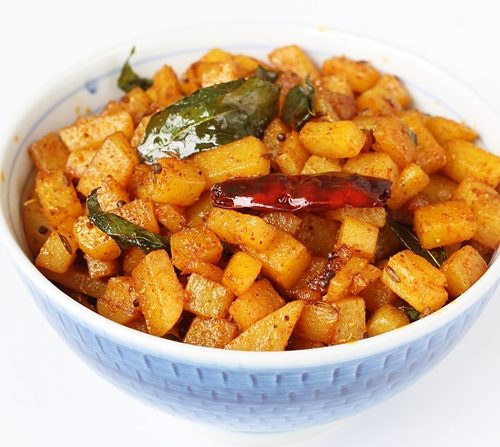

Aloo fry
Ingredients
- oil
- potato
- chilli powder
- salt
Steps For Preparation
- light the gas
- put a vessel
- add oil
- add cut potatoes
- put salt
- put chilli powder
- fry the potatoes till crispy texture
- aloo fry is ready to serve
Link Tat Offers Free Items
Food Recipes